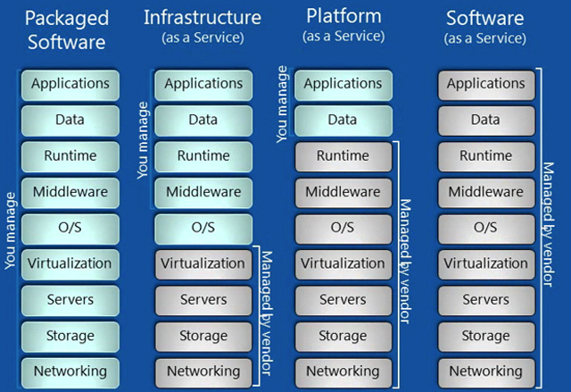
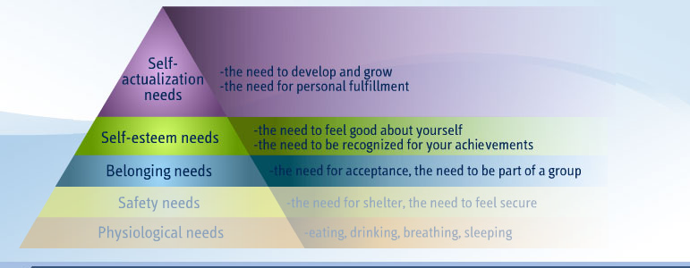
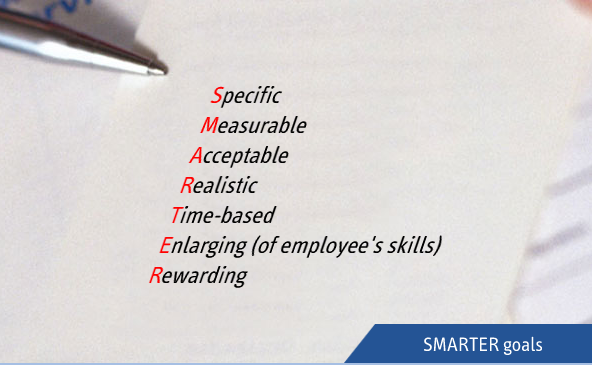

Personal notes
Table of Contents
Shell
Tips
during using "if"
- there should be enough space in "if" condition check eg: if [ $a = $b ]
- if the compare elements are string, add "" for each element eg: if [ "stringa" = "stringb" ]
- for checking a file
- check a file ,whether it's empty
eg: if test -s file; then
echo "hi"
else
echo "empty"
fi
- check a file, whether it's exist
eg: if test -e file; then
echo " exsit"
else
echo " I can't find it"
fi
string operation
abstract sub string
| ${#string} | get the string length |
|---|---|
| ${string:position} | sub string from position to the end |
| ${string:position:length} | sub string from position to length |
| ${string#substring} | delete from start to the first match |
| ${string#substring} | delete from start to the last match |
| ${string%substring} | delete from the end to the first match |
| ${string%%substring | delete from the end to the last match |
| ${string/substring/replacement} | replace the first substring |
| ${string//substring/replacement | replace all the substring |
| ${string/#substring/replacement} |
Functions
ORG
ORG mode 介绍
ORG mode 是一种emacs下的编写模式，可以支持高效的输入文字
是一种所想即所得的记录方式
可以支持多格式输出。
编写过程有很多快捷键，用来提高编写效率以及编写的舒适度。
顶格*后跟空格，*的个数决定了该行的级别，最多支持10级
ORG mode 规矩
commands reference
| name | content | description |
|---|---|---|
| 大纲编辑功能 | ||
| S-TAB | shift+tab | 循环切换整个文档的大纲状态 |
| TAB | tab | 循环切换光标所在大纲状态 |
| C-c C-n/p | ctl+n/p | 下/上标题 |
| C-c C-f/b | ctl+f/b | 下/上标题 同级标题跳转 |
| C-c C-u | 跳到上一级标题 | |
| C-c C-j | 大纲模式浏览 | |
| M-RET | 插入同级 | |
| M-S-RET | 插入同级TODO标题 | |
| M-LEFT/RIGHT | 升降当前标题 | |
| M-S-LEFT/RIGHT | 子树升降级 | |
| M-S-UP/DOWN | 子树上下移动 | |
| C-c * | 本行设置为标题或者正文 | |
| C-c C-w | 将子树或区域移动到另外一个缓冲区 | |
| C-x n s/w | 只显示当前子树 | |
| C-c C-x b | 新缓冲区显示当前子树 | |
| C-c / | 只列出包含搜索结果的大纲，并高亮 | |
| C-c C-c | 取消高亮 | |
| C-c C-x C-h | help | |
| C-c l | 保存链接 | |
| C-c C-l | 创建或修改链接 | |
| C-c C-o | 打开链接 | |
| C-c % | 记录内部链接 | |
| C-c & | 跳转内部链接 | |
| TAG | Category | |
| Catetory 是固定的，很少变化 | 而TAG可以随时增加 | |
| ORG mode的标签是继承的 | 元数据定义的标签整个文档继承 |
| command | description |
|---|---|
| M x eval-buffer | refresh the config |
| #锚点A | ~锚点A~ |
| radio B | radio B |
| C c C x f | |
| #+CAPTION | title of table or pic |
| #+LABLE | one lable, lable name |
| C c C a | attachment |
| C c - | head line–>item |
| C c C u | move to headline |
| S UP/DOWN | move curse |
| M UP/DOWN | move content |
| C c bar | convert to table |
| C 3 C c bar | convert with 3 space |
| M a e | move to the begin or end of the filed |
| M left right | move the current column |
| M S left | kill the current column |
| M S right | insert new column to curse position or left |
| M UP DOWN | move current row up/down |
| M S UP | kill current row |
| M S DOWN | insert new row above or current curse position |
| C u C c - | insert headline above |
| C c - | insert headline below |
| C c RET | insert headline and move to the line below |
| C c ^ | sort lines in region |
| C u C c C c | sort all table calculate with formual |
| C c ' | edit the current region in a new window |
| M x org-table-export | |
| M x org-table-import | |
| M h | paragragh selection |
| C c C c | set tag |
| C c C q | set tag |
| C c \ | search tag |
| C c / m | search and view in tree mode |
| C c a m | create the list from the agenda file about one tag |
todo
| C S RET | TODO insert |
| C c C s | scheduler |
| C c C t | change the state |
| S Right | change the state |
| S left | change the state |
| C c C v C c / t | view all TODO in tree mode |
| S M RET | create an TODO with * |
| C c a t | show all the TODO include the agenda file |
| C c C x C i/o | start or start a timer |
| C c C x a/A | archive in this file |
| C c C x C s | archive to some file |
- first
- second
- third
How to export Chinese in PDF format from org file
example or src is too long?
soluion 1
当在#+begin_example #+end_example或者#+begin_src #+end_src环境中内容过 多时会占用大量空间，一个解决办法是加上 -t 选项并配合 -h height -w width 选项来指定高宽，使它成为有滚动条的区域。但好像无法使用语法高亮并 且此区域内容是可编辑的。
solution 2
#+html: <div style="height:100px;overflow:auto;border-style:solid;border-width:1px">
#+begin_src c++
typedef int HANDS;
enum COLOR { Red, Green, Blue, Yellow, White, Black, Brown } ;
enum BOOL { FALSE, TRUE };
class Animal // common base to both horse and bird
{
public:
Animal(int);
virtual ~Animal() { cout << "Animal destructor...\n"; }
virtual int GetAge() const { return itsAge; }
virtual void SetAge(int age) { itsAge = age; }
private:
int itsAge;
};
#+end_src
</div>
example
1: #define LLC_DEST_INVALID 0 /* Invalid LLC PDU type */ 2: #define LLC_DEST_SAP 1 /* Type 1 goes here */ 3: #define LLC_DEST_CONN 2 /* Type 2 goes here */ 4: 5: extern struct list_head llc_sap_list; 6: extern spinlock_t llc_sap_list_lock; 7: 8: extern int llc_rcv(struct sk_buff *skb, struct net_device *dev, 9: struct packet_type *pt, struct net_device *orig_dev); 10: 11: extern int llc_mac_hdr_init(struct sk_buff *skb, 12: const unsigned char *sa, const unsigned char *da); 13: 14: extern void llc_add_pack(int type, void (*handler)(struct llc_sap *sap, 15: struct sk_buff *skb)); 16: extern void llc_remove_pack(int type); 17: 18: extern void llc_set_station_handler(void (*handler)(struct sk_buff *skb)); 19: 20: extern struct llc_sap *llc_sap_open(unsigned char lsap, 21: int (*rcv)(struct sk_buff *skb, 22: struct net_device *dev, 23: struct packet_type *pt, 24: struct net_device *orig_dev)); 25: static inline void llc_sap_hold(struct llc_sap *sap) 26: { 27: atomic_inc(&sap->refcnt); 28: } 29: 30: extern void llc_sap_close(struct llc_sap *sap);
How to remove the section number when export to html
(setq org-export-with-section-numbers nil) #+options: num:nil
agenda export to icalendar
(setq org-agenda-custom-commands
'(("h" "Home-related tasks"
((tags "@home")
(tags-todo "@home"))
((org-agenda-ndays 300)
(org-icalendar-include-todo t)
(org-icalendar-combined-name "Perso")
(org-icalendar-use-scheduled '(todo-due event-if-todo
event-if-not-todo))
(org-icalendar-use-deadline '(todo-due event-if-todo
event-if-not-todo)))
("~/org/homecal.ics" "~/org/homecal.html"))
("w" "Work-related tasks"
((tags "@work")
(tags-todo "@work"))
((org-agenda-ndays 300)
(org-icalendar-include-todo t)
(org-icalendar-combined-name "Work")
(org-icalendar-use-scheduled '(todo-due event-if-todo
event-if-not-todo))
(org-icalendar-use-deadline '(todo-due event-if-todo
event-if-not-todo)))
("~/org/workcal.ics" "~/org/workcal.html"))))
Added:
Tips
life
分享
如果你受了伤，你要帮助他人减轻伤痛。如果你感到痛苦，你要帮助别人减轻痛苦。如果你的生活一团糟，让自己去帮助其他处在困境中的人摆脱困境。
Added:
body building
你永远不会等到完美的健身时间和健身条件。你要主动创造它们，就好像我们每天、每分、每秒都在寻找不锻炼的借口一样。 Added:
彼得德鲁克说，每两年都要有一个学习主题
Added:
打造你的的家庭数据中心
如果你受了伤，你要帮助他人减轻伤痛。如果你感到痛苦，你要帮助别人减轻痛 苦。如果你的生活一团糟，让自己去帮助其他处在困境中的人摆脱困境. 分享，带来….
互联网时代，我们越来越多的互联，网络上各种各样的资源，质量越来越高，覆 盖越来越全，连我上小学的侄子，都知道遇到问题的时候，”百度一下，你就知 道“。 网络丰富了我们生活的内容，资源就在那里，会发现的人，总能找到他需要。我 也曾苦恼，遇到各种问题，掐指算来，已经在网上摸索了13年，从不知道email 是什么东西，到迷恋QQ的神奇。从网际快车，到flashget, 从BT，到PT。各种苦 恼，以及苦恼后的豁然开朗。 现在的我，坐在床上，用一台只有100多G硬盘的超级本，连接着家里的数据中心， 耳边是乌拉托娅的美妙歌声，我随时可以打开影片库里收藏的高清资源，这些资 源足有4T。而家里的那台老爷机，正在帮我下载爱探险的dora，那是一 台运行稳定，常年不断电的老爷机，换了主板，换了CPU，挂了3块2T的硬盘，里 边存储着几年来拍过的照片，录过的视频，下载过的电影，纪录片，成千上万的 电子书，等我安排时间去翻一翻。所有这一切，我都可以通过家里的各种终端， 随时浏览，翻阅，欣赏。而我在这里敲击的每个字符，都会随时上传到数据中心， 数据中心，会把这些内容上传到云服务器，我不用担心电脑中毒，毁了系统，丢 了数据。超级本，平板电脑，手机，他们只是接入数据中心的接口，我把他们搬 来拿去，通过无线网络，他们和家中的数据中心，随时可以连接。 网络某个角落的你，是否也想拥有这样的数据中心，如果是的话，你可以继续留 在本页，每一台设备，每一个软件，我都会悉数分享，如果你不差钱，肯定会打 造一个原超过我的，适合家庭使用的数据中心。有了这个数据中心，你再也不会 因为系统坏掉，弄丢你珍贵的资源。不会因为系统重启，弄丢了写了一半的文章。 就像开篇所描述，总结一些，给那些曾经和我一样痛苦的人。
资源，分很多种。
- 资讯
实时性很高，及时关注，不同领域有不同的渠道。 TIPS: 如果你还对你的领域的渠道一片空白，那请从google开始。搜索你关注的 话题，海选那些你觉得有很好参考价值的链接，一点点积累你 的收藏夹。然后 分类你的收藏夹
Read GTD through
notes
在某一时刻，决策行动的4个标准的模式
- 环境
- 有多少时间
- 有多少精力
- 重要性
启动思维的技巧
- 不判断，不质疑，不评估，不批判
- 追求数量，不求质量
- 把分析组织工作至于其次的位置
Tips
领先的秘密在于开始行动。开始行动的秘密在于把复杂的大宗任务分解成为可以操作的细小工作，然后开始实施第一项内容。– 马克.吐温
Added:
无论问题多大、多严峻，你总可以向解决它们的方向迈出小小的一步，来根除掉束手无策的感觉。行动起来吧
Added:
任何一项成功的工作在进行到中途时，看起来都如同一场灾难。
Added:
让我们把超前的焦虑变成超前的思考和策划
Added:
焦虑和内疚并不是因为承担太多的工作而造成的，这是由于你撕毁了同自己签订的协议而导致后果
Added:
我们都可能遇到这种情况：有时，思维敏捷；有时，应该远离思考
Added:
你的工作就是发现你的工作，然后全身心的投入其中 –佛
Added:
ubuntu
font
sudo fc-cache -fv .fonts
rtorrent
#号后面的是注释，不用管他，蓝色标出的是比较重要的配置 ################################## 配置文件开始 #################################### # This is an example resource file for rTorrent. Copy to # ~/.rtorrent.rc and enable/modify the options as needed. Remember to # uncomment the options you wish to enable. # 每个torrent文件允许连接的最大以及最小的peer的数目 min_peers = 40 max_peers = 250 # Same as above but for seeding completed torrents (-1 = same as downloading) #min_peers_seed = 10 #max_peers_seed = 50 # Maximum number of simultanious uploads per torrent. max_uploads = 15 # 全局上传和下载速率，单位是KB. "0" 代表无限制 download_rate = 75 upload_rate = 28 # 默认下载目录，下载好的文件会放到这里 directory = /opt/downloads # Default session directory. Make sure you don't run multiple instance # of rtorrent using the same session directory. Perhaps using a # relative path? session = /opt/downloads/.session # 下面是一个非常有用的功能：监视目录 # 放在/opt/torrent目录底下的torrent文件会自动开始下载 # 配置好监视目录以后，只要通过samba或scp往这个目录传种子，就会自动开始下载 schedule = watch_directory,5,5,load_start=/opt/torrent/*.torrent #schedule = untied_directory,5,5,stop_untied= # Close torrents when diskspace is low. #schedule = low_diskspace,5,60,close_low_diskspace=100M # Stop torrents when reaching upload ratio in percent, # when also reaching total upload in bytes, or when # reaching final upload ratio in percent. # example: stop at ratio 2.0 with at least 200 MB uploaded, or else ratio 20.0 #schedule = ratio,60,60,stop_on_ratio=200,200M,2000 # The ip address reported to the tracker. #ip = 127.0.0.1 #ip = rakshasa.no # The ip address the listening socket and outgoing connections is # bound to. #bind = 127.0.0.1 #bind = rakshasa.no # Port range to use for listening. #port_range = 6890-6999 # Start opening ports at a random position within the port range. #port_random = no # Check hash for finished torrents. Might be usefull until the bug is # fixed that causes lack of diskspace not to be properly reported. #check_hash = no # 是否使用UDP trackers，建议选yes use_udp_trackers = yes # Alternative calls to bind and ip that should handle dynamic ip's. #schedule = ip_tick,0,1800,ip=rakshasa #schedule = bind_tick,0,1800,bind=rakshasa # 是否允许协议加密，建议改成allow_incoming,enable_retry,prefer_plaintext的组合体，具体原因就不解释了 # allow_incoming, try_outgoing, require, require_RC4, enable_retry, prefer_plaintext # # The example value allows incoming encrypted connections, starts unencrypted # outgoing connections but retries with encryption if they fail, preferring # plaintext to RC4 encryption after the encrypted handshake # encryption = allow_incoming,enable_retry,prefer_plaintext # # Do not modify the following parameters unless you know what you're doing. # # Hash read-ahead controls how many MB to request the kernel to read # ahead. If the value is too low the disk may not be fully utilized, # while if too high the kernel might not be able to keep the read # pages in memory thus end up trashing. #hash_read_ahead = 10 # Interval between attempts to check the hash, in milliseconds. #hash_interval = 100 # Number of attempts to check the hash while using the mincore status, # before forcing. Overworked systems might need lower values to get a # decent hash checking rate. #hash_max_tries = 10 # Max number of files to keep open simultaniously. #max_open_files = 128 # Number of sockets to simultaneously keep open. #max_open_sockets = <no default> # Example of scheduling commands: Switch between two ip's every 5 # seconds. #schedule = "ip_tick1,5,10,ip=torretta" #schedule = "ip_tick2,10,10,ip=lampedusa" # Remove a scheduled event. #schedule_remove = "ip_tick1" #选择utf-8可以在samba中看到中文 encoding_list = UTF-8 #rtorrent创建的文件夹(或文件)的权限，默认是0644，建议改成0000(感谢xuanwuhu)，使所有用户都能访问。 #也只有这样在samba中才可以直接打开、拷贝、删除rtorrent创建的文件 umask = 0000 #下面两个选项打开dht的功能，照做即可，另外如果想让 rtorrent 在启动的时候就使用 DHT，可以把dht=auto改为dht=on dht = auto dht_port = 6778 #允许peer交换，当然允许了，多多益善啊 peer_exchange = yes #最后这个参数和web配置以及远程管理有关，稍后再介绍 scgi_port = :5000
cmus
apt-get install ubuntu-desktop
sudo apt-get install ubuntu-desktop 安装ubuntu桌面，最全最笨的方法。
Added:
apt-get update -y
yes to all options
Added:
locale
$ locale LANG=en_US.UTF-8 LC_CTYPE="en_US.UTF- 8" #用户所使用的语言符号及其分类 LC_NUMERIC="en_US.UTF- 8" #数字 LC_TIME="en_US.UTF-8" #时间显 示格式 LC_COLLATE="en_US.UTF-8" #比较和排序习惯 LC_MONETARY="en_US.UTF-8" #LC_MONETARY LC_MESSAGES="en_US.UTF- 8" #信息主要是提示信息,错误信息, 状态信息, 标题, 标签, 按钮和菜单等 LC_PAPER="en_US.UTF- 8" #默认纸张尺寸大小 LC_NAME="en_US.UTF-8" #姓名书写方式 LC_ADDRESS="en_US.UTF-8" #地址书写方式 LC_TELEPHONE="en_US.UTF-8" #电话号码书写方式 LC_MEASUREMENT="en_US.UTF-8" #度量衡表达方式 LC_IDENTIFICATION="en_US.UTF-8" #对自身包含信息的概述 LC_ALL=
- 优先级
LC_ALL>LC_*>LANG LC_ALL的值将覆盖所有其他的locale设定4.1、如果你设定了
LC_ALL＝zh_CN.UTF-8，那么不管LC_*和LANG设定成什么值，它们都会被强
制服从LC_ALL的设定，成为 zh_CN.UTF-8。 4.2、假如你设定了LANG＝
zh_CN.UTF-8，而其他的LC_*=en_US.UTF- 8，并且没有设定LC_ALL的话，那
么系统的locale设定以LC_*=en_US.UTF-8。4.3、假如你设定了LANG＝
zh_CN.UTF- 8，而其他的LC_*，和LC_ALL均未设定的话，系统会将LC_*设定
成默认值，也就是LANG的值 zh_CN.UTF-8 。 4.4、假如你设定了 LANG＝
zh_CN.UTF-8，而其他的LC_CTYPE=en_US.UTF-8，其他的LC_*，和LC_ALL均
未设定的话，那么系统的 locale设定将是：LC_CTYPE=en_US.UTF-8，其余
的 LC_COLLATE，LC_MESSAGES等等均会采用默认值，也就是 LANG的值，也
就是LC_COLLATE＝LC_MESSAGES＝……＝ LC_PAPER＝LANG＝zh_CN.UTF-8。
- 万能药
echo "export LC_ALL=zh_CN.utf8">> /etc/profile Added:
Change the default shell
查看一下当前的shell [phpbird@host3 ~]$ echo $SHELL /usr/local/bin/bash 当然，这是修改后的。
修改缺省的shell可以修改 /etc/passwd 这个文件是用:分割的多行文件，找到需要修改的用户。把最后一行的shell路径替换掉就可以。当然如果不让登录，就修改成一个不存在的shell。如果改错了，就会麻烦点了。
还有一个是用命令来：chsh 很优雅的方法 chsh -s /path/to/shell {user-name} 我这里就是 chsh -s /usr/local/bin/bash juhui 不是root用户，需要输入密码。 Added:
tools
vimium is cool
emacs
emacs command
C表示ctrl，M表示mac下的meta键，windows下要先按ESC在输入命令字符 C-v 向下移动一屏 M-v 向上移动一屏 C-l 重置屏幕光标 C-n 下移 C-p 上移 C-b 左移 C-f 右移 M-f 右移一个单词(中文为下一个标点) M-b 左移一个单词(中文为上一个标点) C-a 光标移动到行首 C-e 光标移动到行尾 M-a 光标移动到句首 M-e 光标移动到句尾 M-< 光标移动到文字首 M-> 光标移动到文字尾 C-u 输入命令的前缀参数，举例：C-u 8 C-f(向前移动8个字符),C-u 8 (输入8个) C-g 取消当前命令或输入的参数 Backspace 删除光标前的一个字符 C-d 删除光标后的一个字符 M-Backspace 删除光标前的一个词 M-d 删除光标后的一个词 C-k 移除从光标到行尾间的字符 M-k 移除从光标到句尾间的字符 C-@ C-w 移除指定光标之间的字符，举例C-@移动光标到指定位置C-w(移除两次光标之间的内容) C-y 召回上一次被移除的文字 M-y 循环召回被移除的文字 C-x 字符扩展 1 关闭窗格，只保留1个窗格 u 撤消操作(undo) C-f 查找文件(新文件名为新建) C-s 保存当前文件 C-b 显示缓冲区 b 缓冲区名称 显示指定文件缓冲区 s 保存所有文件 f 设置自动换行宽度，默认70，举例：C-u 20 C-x f o 移动到其他窗格 M-x 命令名扩展 C-z 挂起Emacs，windows里为最小化Emacs M-x 命令名扩展 replace-string 查找并替换文字 recover-file 恢复自动保存文件 fudamental-mode 切换到Fundamental模式 text-mode 切换到text模式 auto-fill-mode 启动/停用自动换行模式 C-h 查看帮助信息 m 查看当前主模式的文档 a 相关命令搜索 f 解释函数名 i 查看联机手册 M-q 手动对段落进行换行 C-s 向前搜索 C-r 向后搜索 C-q 解除屏幕冻结 Added:
C x n n C x n w
Added:
ffmpeg
a complete, cross-platform solution to record, convert and stream audio and video Added:
istanbul
apvlv，zathura和vifm
commands
dump-nftable for dump the netfilter entry
Added:
wisdom in life
Say sorry in family, but not argue with your family
Added: [2013-10-02 周三 18:40
Management
Becoming a manager
Could
Tips
是否可能，运营商不再需要买我们的具体设备，而是买C&P
Service module

- Infrastructure as a service
- Platform as a servic
- Software as a service
- Network as a service
Mobile network virtualization: Model in which a telecommunications manufacturer or independent network operator builds and operates a network (wireless, or transport connectivity) and sells its communication access capabilities to third parties (commonly mobile phone operators) charging by capacity utilization. A mobile virtual network operator (MVNO), is a mobile communications services provider that does not own the radio spectrum or wireless network infrastructure over which it provides services. Commonly a MVNO offers its communication services using the network infrastructure of an established mobile network operator
Introduction to motivation
Needs hierachy

Belonging needs
Involve employee
Self-esteem needs
Validate employee
Self-actualization needs
Develop employee
SMARTER

Business execution
Practice-people
九大贵人
激励你，让你看到自己优点的人 帮你清理生活工作思路的人 给你分享好消息的人 提醒你看清自己不足的人 愿介绍成功朋友给你认识的人 相信你教导你成长的人 欣赏你维护你并志趣相投的人 给你正能量带去轻松快乐的人 能提供学习机会成长平台的人
法显
公元399
公元399年，62岁的法显开始西行。
楼兰
修习小乘佛法。鄯善
和田
于阗，公元三世纪，朱士行 公元400年春，法显至此
大乘小乘
大乘，普渡众生 小乘，超脱个人
公元401年
帕米尔高原
六十六岁
那竭
公元405年-407年
七十岁
回国 心生种种画，画生种种心，心画不而者，即是如来身。
斯里兰卡
乐土，光明富庶的土地。 停留两年 七十二岁
公元411年8月
74岁东归
75岁
崂山
公元412年
建康，翻译，江苏南京
江陵辛寺
佛国记
公元423年
逝世 86岁
RCA/EDA
Icebergs
原因在下，问题在上
Difference between RCA/EDA
RCA
防止产生bug
EDA
防止bug流出去
Pracctice flow
Select fault-->Assign fault-->RCA/EDA-->review proposed action-->approve
找的是系统问题，而不是人
遇到的问题
怎么问问题，问好问题，问不下去
问问题的方法。
内部讨论容易妥协，基于不同的角色，迎合客户。
问题容易超出影响圈，没办法深入。
历史遗留问题
Gathering Facts
Action and Objective
RTFM STFW
对象–偏差
IRC
使问题容易回复
描述问题症状而不是猜测–让我看看
描述目标，而不是过程
Report a bug efficiently
Cloud inter
Common
这次的内容主要是什么 最具挑战性的事情，收获有哪些 Cloud的层次 what is DPDK SDN? 把RNC放到云上，有什么想法
PY
所有锁的机制
MWA
RNTI
Sun Jan 19 23:12:49 2014